09.0 몬테카를로법의 수학적 기초와 역사적 유래
그림 09-0-1 이호진 교수님의 몬테카를로법 역사와 원리 특강 — 조교 지니와 함께 룰렛과 컴퓨터의 만남을 강의하고 경청하는 도로시와 토토 (16:9 와이드)
강화학습에서 환경의 수학적 모델(상태 전이 확률과 보상 함수)을 전혀 알지 못해도, 에이전트가 세상에 직접 발을 내딛고 겪은 수많은 실제 모험(에피소드) 샘플들을 모아 평균을 내어 최적 가치와 정책을 찾아내는 기법을 몬테카를로법(Monte Carlo Method)이라고 부릅니다.
👨🏫 이호진 교수님의 생각 열기: “우리가 지도나 날씨 예보 모델을 전혀 모르는 미지의 섬에 도착했다고 해보자. 어떻게 하면 가장 안전하고 열매가 많은 길을 찾아낼 수 있을까? 가장 확실하고 지혜로운 방법은 직접 여러 번 길을 걸어보고(시행), 그 경험들의 평균을 내어(통계) 판단하는 것이란다. 이것이 바로 몬테카를로 기법의 가장 강력한 본질이란다.”
👧 도로시와 토토의 비유로 이해하기: “맞아요, 교수님! 제가 정원의 네모난 연못에 조약돌을 신나게 던져보았을 때, 원형 분수대 안쪽에 빠진 돌멩이와 연못 전체에 빠진 돌멩이 개수의 비율을 셌더니, 복잡한 적분 공식 없이도 원주율 π의 근사값을 바로 계산해낼 수 있었어요! 토토도 옆에서 돌멩이를 주워다 주며 함께 개수를 세어주었답니다.”
그림 09-0-1-2 사각형 연못 안의 원형 분수대에 조약돌을 던져 무작위 표본 비율로 면적과 원주율을 직관적으로 유도해보는 도로시와 토토, 지니 (1:1 순백색)
도대체 이 위대한 무작위 표본 평균 계산 기법은 어떻게 탄생했을까요? 전쟁의 그늘 속에서 천재 수학자들의 번뜩이는 직관과 도박의 도시 몬테카를로의 이름이 얽힌 흥미진진한 역사 속으로 여행을 떠나봅시다!
09.0.1 몬테카를로법의 역사적 유래
09.0.1.1 병상에서 시작된 솔리테어 카드 놀이
1946년, 맨해튼 프로젝트에 핵심 연구원으로 참여했던 폴란드계 미국인 천재 수학자 스타니스와프 울람(Stanisław Ulam)은 뇌염 수술을 받고 병상에 누워 무료하게 요양을 하고 있었습니다. 건강을 회복하던 울람은 침대 위 트레이에서 혼자 카드를 정렬하여 짝을 맞추는 ‘솔리테어(Solitaire, 패션스)’ 카드 게임을 반복해서 즐기고 있었습니다.
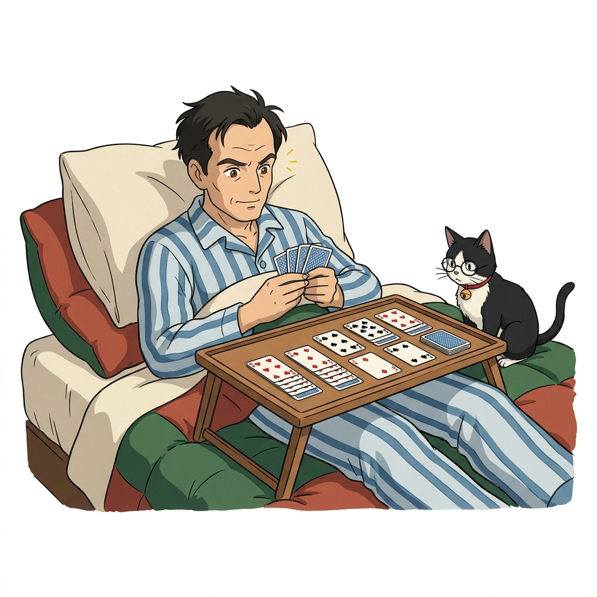
그림 09-0-2 병상에서 솔리테어 카드 놀이를 하던 중 표본 무작위 추출(Random Sampling)의 위대한 힘을 직관적으로 깨달은 스타니스와프 울람과 조교 지니 (1:1 순백색)수학자였던 울람은 카드를 섞으며 문득 강렬한 호기심이 일었습니다.
“52장의 카드를 무작위로 뒤섞어 판을 깔았을 때, 이 솔리테어 게임이 막힘없이 완벽하게 풀릴 수학적 확률은 과연 얼마나 될까?”
1) 순수 수학적 접근의 한계
울람은 즉시 조합론과 순열 공식을 동원하여 대수학적으로 정밀한 성공 확률을 계산하려 했습니다. 하지만 52장의 카드가 뒤섞이는 경우의 수는 무려 52! ≈ 8.065 × 1067이라는, 관측 가능한 우주의 원자 수에 필적하는 초거대 숫자였습니다. 아무리 뛰어난 수학자라도 종이와 연필만으로 엄밀한 해석적 해(Analytical Solution)를 구해내는 것은 불가능에 가까웠습니다.
2) 발상의 대전환: “직접 여러 번 해보면 되잖아!”
수식의 벽에 부딪힌 울람은 문득 기발하고 실용적인 생각을 떠올렸습니다:
“복잡한 순열 조합 공식으로 머리를 싸맬 필요가 있을까? 실제로 카드를 100번 섞어서 게임을 플레이해보고, 그중 성공한 횟수가 15번이라면 성공 확률은 약 15%라고 바로 추정할 수 있잖아!”
이것이 바로 ‘확률 분포 수식을 몰라도, 실제 무작위 시행(Sampling)의 평균을 내어 참값을 추정한다’는 몬테카를로법의 최초의 불꽃이었습니다.
09.0.1.2 맨해튼 프로젝트와 삼촌의 도박 도시
울람은 건강을 회복하자마자 이 번뜩이는 영감을 동료이자 20세기 최고의 천재 과학자 존 폰 노이만(John von Neumann)에게 공유했습니다.
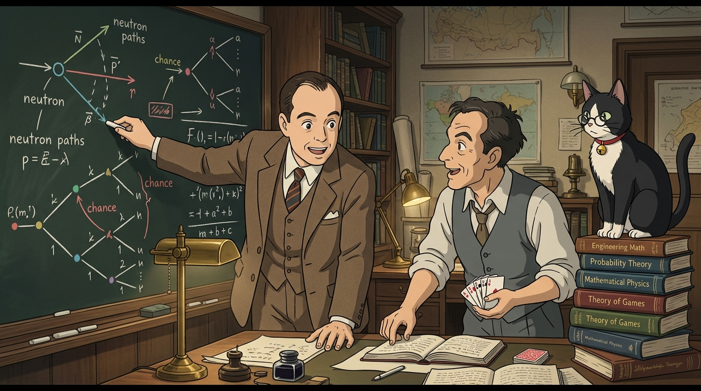
그림 09-0-2-2 울람의 무작위 표본 추출 아이디어를 맨해튼 프로젝트(중성자 확산) 컴퓨터 수치 해석에 적용할 수 있음을 깨닫고 열띤 토론을 벌이는 존 폰 노이만과 스타니스와프 울람 (16:9 와이드)컴퓨터 아키텍처의 아버지이자 게임 이론의 대가였던 폰 노이만은 이 이야기를 듣자마자 무릎을 쳤습니다. 당시 연구진은 핵분열 과정에서 무수히 많은 중성자가 물질 속을 이리저리 튕겨 다니며 연쇄 반응을 일으키는 복잡한 충돌 궤적을 미분방정식으로 풀지 못해 난항을 겪고 있었습니다. 폰 노이만은 중성자의 충돌 경로 하나하나를 마치 룰렛을 돌리듯 무작위 수(난수)로 모사(Simulation)하여 거대한 컴퓨터로 수천 번 계산하면 전체 확산율을 완벽히 계산할 수 있음을 간파했습니다.
카지노 도시 ‘몬테카를로’ 암호명의 탄생
당시 핵 연구는 최고 수준의 국가 극비 프로젝트(맨해튼 계획)였기 때문에 이 혁신적인 무작위 시뮬레이션 계산법을 가리킬 비밀 암호명이 필요했습니다.
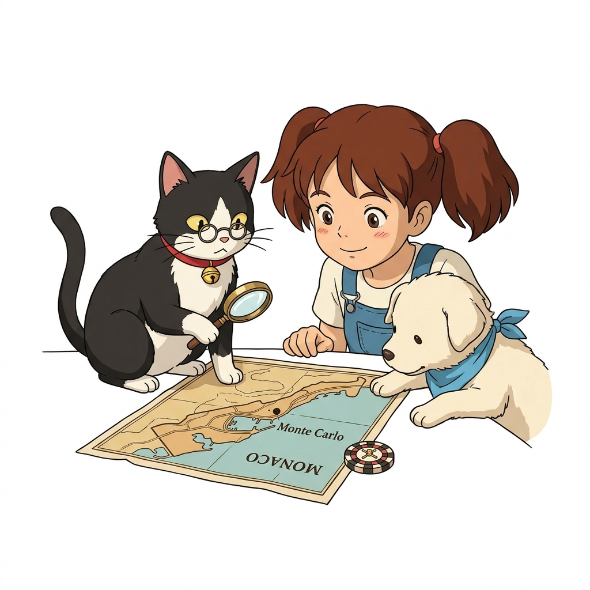
그림 09-0-2-3 조교 지니가 돋보기로 지중해 연안 모나코의 세계적인 카지노 도시 ‘몬테카를로’ 지도를 비추며 암호명의 유래를 재미있게 설명해주는 씬 (1:1 순백색)🐱 조교 지니의 역사 비화 돋보기: “울람 연구원에게는 카지노 도박을 너무 좋아해서 친척들에게 늘 돈을 빌리러 다니던 삼촌이 한 분 계셨대냥! 그 삼촌이 자주 출몰하던 화려한 도박의 성지가 바로 지중해 모나코 공국의 ‘몬테카를로(Monte Carlo)’였단다냥! 무작위로 돌아가는 룰렛 바퀴와 주사위야말로 이 무작위 시뮬레이션의 본질과 딱 들어맞았기에, 암호명을 ‘몬테카를로 프로젝트’로 정하게 된 거란다냥!”
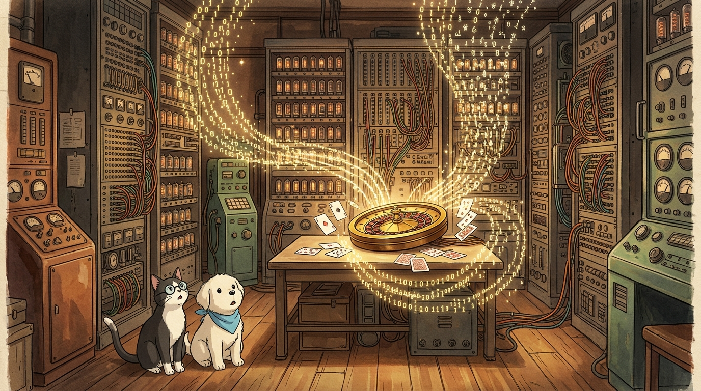
그림 09-0-2-4 1940년대 거대한 진공관 컴퓨터 회로와 카지노 룰렛의 무작위 난수가 만나 현대 과학 시뮬레이션으로 피어난 역사적인 만남 (16:9 와이드)이렇게 탄생한 몬테카를로법은 최초의 전자식 컴퓨터 에니악(ENIAC)과 결합하여 물리학, 금융 공학, 분자 생물학, 그리고 오늘날의 인공지능 강화학습 에이전트의 가치 추정에 이르는 가장 거대하고 강력한 알고리즘 기둥으로 자리 잡았습니다.
09.0.2 몬테카를로법의 수학적 의미
그림 09-0-3-0 이호진 교수님이 대형 칠판 앞에서 몬테카를로법의 핵심 수학 이론(기댓값과 표본 평균의 수렴)을 명쾌하게 강의하고, 도로시가 손을 들며 깨달음을 얻는 씬 (16:9 와이드)
그렇다면 무작위로 표본을 추출하여 평균을 내는 것이 수학적으로 왜 정당하며, 어떻게 진짜 참값에 도달할 수 있는 것일까요? 이호진 교수님의 칠판 강의를 통해 그 수학적 뼈대를 살펴봅시다.
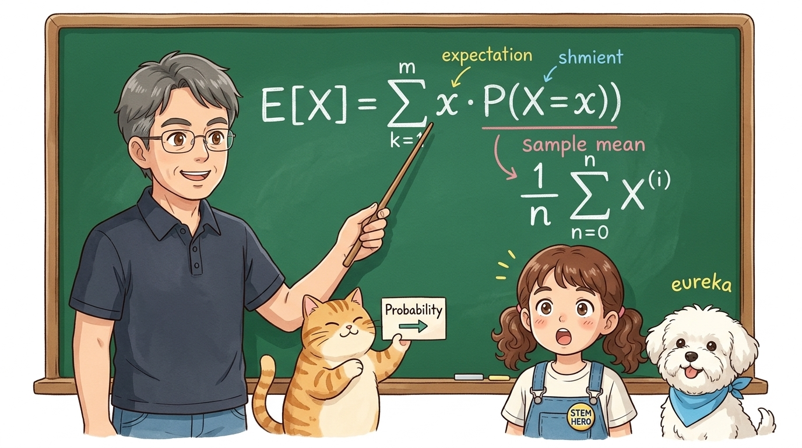
그림 09-0-3-0b 이호진 교수님과 조교 지니가 기댓값 공식 E[X] = ∑ x · P(X = x)과 표본 평균 (1/n) ∑ X(i)의 기호별 의미를 알기 쉽게 해설하는 칠판 강의 (16:9 와이드)💡 수식 돋보기: 기댓값 E[X]와 표본 평균 기호 해부
기댓값과 표본 평균의 관계를 정확히 이해하기 위해 수식을 구성하는 기호들을 하나씩 뜯어봅시다:
- E[X] (참 기댓값, Expectation): 확률 변수 X가 취할 수 있는 이론적 참 평균값입니다. 모집단 전체의 확률적 성질을 완벽히 대변하는 참 진리(Ground Truth)입니다.
- ∑ x · P(X = x) (확률 가중합): 일어날 수 있는 모든 구체적인 사건 값 x에 그 사건이 발생할 엄밀한 수학적 확률 P(X = x)를 곱하여 전부 더한 값입니다. 주사위라면 1(1/6) + 2(1/6) + … + 6(1/6) = 3.5가 됩니다.
- (1/n) ∑i=1n X(i) (표본 평균, Sample Mean): 에이전트가 현실 세계에서 직접 몸으로 부딪히며 측정한 n개의 실제 경험 데이터(X(i))를 모두 더해 시행 횟수 n으로 나눈 산술 평균입니다.
- 💡 몬테카를로의 핵심 통찰: 강화학습에서 에이전트는 환경의 복잡한 확률 분포 P를 전혀 알지 못합니다. 하지만 실제로 겪은 무수한 표본들의 평균 (1/n) ∑ X(i)을 계산하면, 확률 분포 P를 직접 계산하지 않고도 참 기댓값 E[X]에 완벽하게 도달할 수 있습니다!
09.0.2.1 대수의 법칙 (Law of Large Numbers)
몬테카를로법이 오차 없이 참값으로 수렴하도록 보장하는 가장 거대한 수학적 기둥은 바로 대수의 법칙(큰 수의 법칙, Law of Large Numbers)입니다.
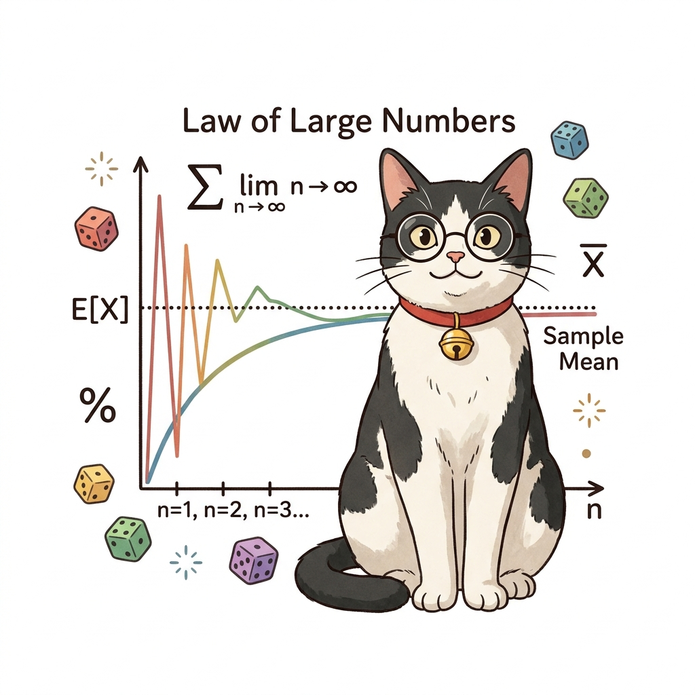
그림 09-0-3-1 표본 수(n)가 적을 때는 극심하게 요동치다 표본이 누적될수록 참 기댓값으로 정밀하게 수렴하는 대수의 법칙 다이어그램 (1:1 순백색)👨🏫 이호진 교수님의 수학적 정리: “어떤 확률 변수 X로부터 서로 독립적으로 무작위 추출된 표본(샘플) X(1), X(2), …, X(n)이 있을 때, 시행 횟수 n이 무한히 커질수록 표본들의 평균값은 원래 모집단의 참 기댓값 E[X]로 반드시 수렴한다는 정리란다.”
limn → ∞ (1/n) ∑i=1n X(i) = E[X]
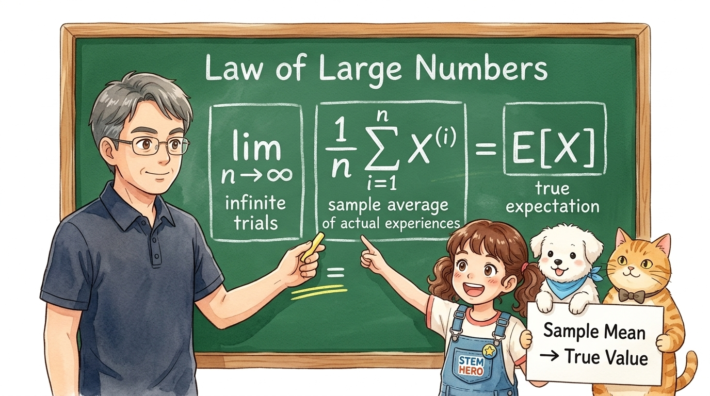
그림 09-0-3-1b 대수의 법칙 극한 수식 limn → ∞ (1/n) ∑i=1n X(i) = E[X]을 3대 블록으로 분해하여 설명하는 이호진 교수님과 도로시, 토토 (16:9 와이드)💡 수식 돋보기: 대수의 법칙 극한 수식 3대 블록 분석
대수의 법칙을 보장하는 극한 수식은 3개의 핵심 구성 블록으로 완벽히 분해할 수 있습니다:
- 블록 1: limn → ∞ (무한 시행의 극한):
- 표본의 수(에이전트가 겪은 에피소드 시행 횟수 n)를 무한대로 증가시키는 극한 연산자입니다.
- 표본 수가 적을 때는 우연에 의한 오차가 크게 작용하지만, n이 커질수록 우연의 요동(Fluctuation)은 상쇄되어 사라집니다.
- 블록 2: (1/n) ∑i=1n X(i) (누적 경험의 표본 평균):
- 에이전트가 환경과 상호작용하며 실제로 기록한 경험값들의 누적 산술 평균입니다.
- 강화학습에서는 각 에피소드마다 획득한 총 누적 보상(반환값, Return)들의 평균에 해당합니다.
- 블록 3: = E[X] (완전 일치와 오차 0):
- 단순한 근사(
≈)가 아닌 완벽한 등호(=)입니다. 시행 횟수가 무한히 쌓이면 표본 평균과 참 기댓값 사이의 오차가 완벽하게 ‘0’으로 수렴함을 수학적으로 보증합니다.
- 단순한 근사(
🎲 주사위 예시로 살펴보기
- 주사위 한 개를 던졌을 때 나오는 눈금의 참 기댓값:
E[X] = ∑x=16 x · P(X = x) = 1(1/6) + 2(1/6) + … + 6(1/6) = 3.5
- 처음에 주사위를 3번 던졌을 때는
[1, 6, 2]가 나와 평균이 3.0으로 오차가 큽니다. - 하지만 주사위를 100번, 1,000번, 10,000번 던져서 평균을 내면 정확하게 3.5000…으로 수렴합니다.
-
이 법칙 덕분에 우리는 복잡한 상태 전이 확률 행렬 P(s’ s, a)를 전혀 몰라도, 실제 환경에서 겪은 수많은 에피소드의 누적 보상(Return)들의 표본 평균을 내는 것만으로 상태 가치 함수 V(s)와 행동 가치 함수 Q(s, a)를 완벽하게 계산해낼 수 있습니다!
09.0.2.2 동전 던지기로 원주율 π 구하기
몬테카를로 기법의 놀라운 직관을 가장 직관적으로 체감할 수 있는 교재 실습은 바로 정사각형 내접원 동전 던지기 실험입니다.
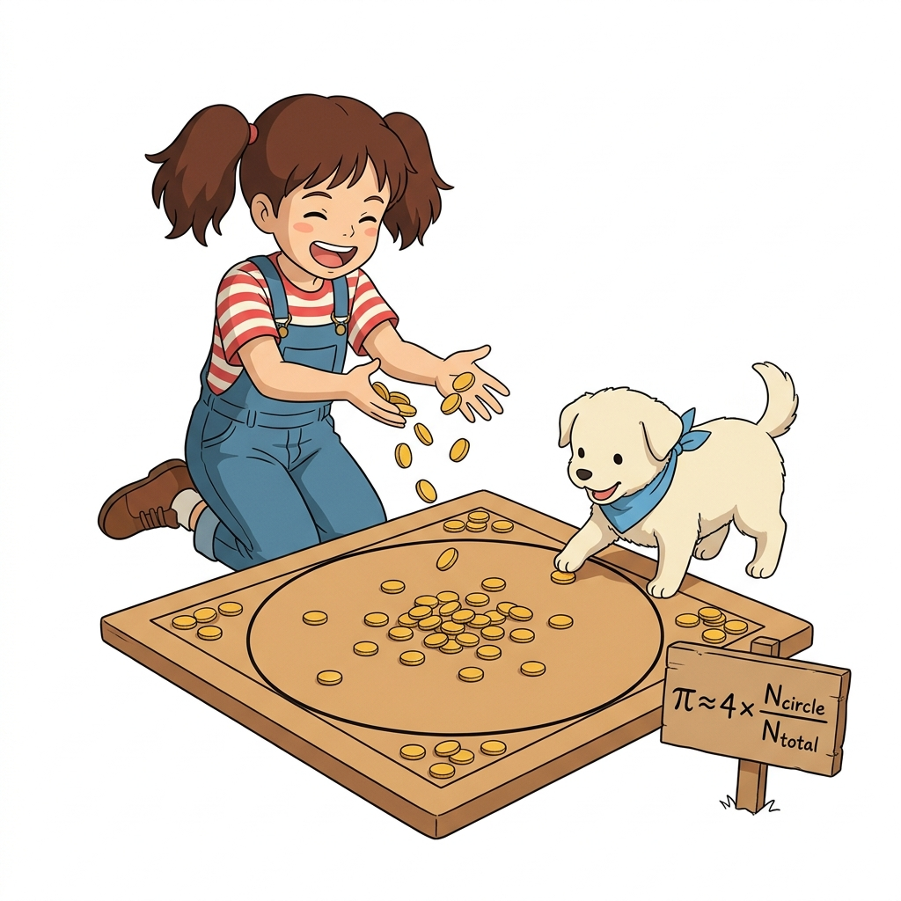
그림 09-0-3 사각형 안에 내접하는 원을 그리고 무작위로 동전을 던져 원주율 π를 기하학적으로 추정하는 도로시와 보조견 토토 (1:1 순백색)- 한 변의 길이가 2r인 정사각형의 넓이:
Ssquare = (2r) × (2r) = 4r2
- 정사각형 안에 꼭 맞게 들어가는 반지름 r인 내접원의 넓이:
Scircle = πr2
기하학적 확률 비례식 유도
도로시가 정사각형 영역 전체를 향해 눈을 감고 동전을 무작위로 골고루 무수히 많이 던진다고 해봅시다. 전체 사각형 영역에 떨어진 총 동전의 개수를 Ntotal, 그중 동그란 원 안쪽에 쏙 들어간 동전의 개수를 Ncircle이라고 하면 다음 비례식이 성립합니다:
Ncircle / Ntotal ≈ (원의 넓이 / 정사각형의 넓이) = πr2 / 4r2 = π / 4
양변에 4를 곱하면, 복잡한 삼각함수나 미적분 없이 오직 동전을 던진 개수를 세는 단순 연산만으로 원주율 π를 유도할 수 있습니다!
π ≈ 4 × (Ncircle / Ntotal)
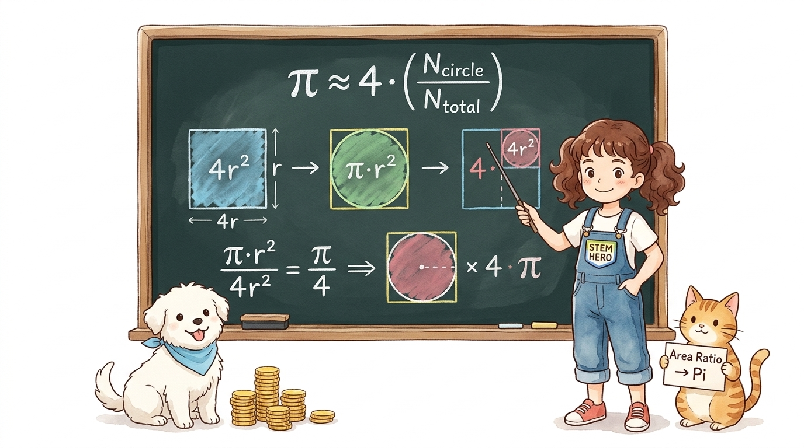
그림 09-0-3b 정사각형 면적 4r2과 내접원 면적 πr2의 기하학적 비례 관계에서 원주율 π를 단독으로 유도해내는 과정을 설명하는 도로시와 토토, 지니 (16:9 와이드)💡 수식 돋보기: 왜 ‘4’를 곱할까? 원주율 유도 공식 기호 해부
단순히 동전을 던져 센 개수 비율에 왜 숫자 ‘4’를 곱하면 신기하게도 원주율 π가 계산되는지, 기하학적 유도 과정을 단계별로 해부해 봅시다:
- Ncircle / Ntotal (표본 개수 비율): 전체 떨어진 동전 수 중 둥근 원 내부에 들어간 동전 개수의 비율입니다. 무작위로 균등하게 던졌으므로, 이 비율은 두 도형의 실제 면적 비율과 근사합니다.
- 면적 비례식의 도출:
- 한 변이 2r인 외접 정사각형의 넓이: Ssquare = (2r) × (2r) = 4r2
- 반지름이 r인 내접원의 넓이: Scircle = πr2
- 두 면적의 비율: Scircle / Ssquare = (πr2) / (4r2) = π / 4
- ‘4 ×’의 수학적 출처:
- 비율 식
*N*<sub>circle</sub> / *N*<sub>total</sub> ≈ *π* / 4의 분모에 있는 4를 없애고 순수한 π만 남기기 위해 양변에 4를 곱해준 결과입니다. - 즉, ‘4’는 정사각형 면적 공식(4r2)에서 r2을 소거하고 남은 기하학적 상수 배수입니다!
- 비율 식
- ‘≈’ (근사 기호)의 물리적 의미:
- 무한개의 동전을 던질 수 없는 현실의 실험이므로, 유한한 표본 N으로 추정한 확률적 근사값임을 나타냅니다.
- 하지만 대수의 법칙에 따라 동전을 던지는 횟수 N이 커질수록 근사치 π는 참값 3.14159…로 오차 없이 수렴해 갑니다.
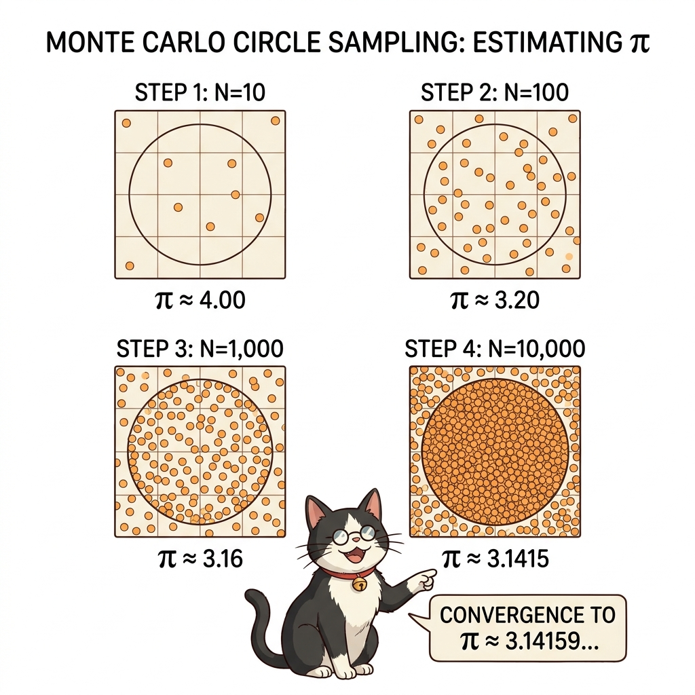
그림 09-0-4 동전 던지기 횟수 N이 증가할수록 오차가 줄어들며 참값 3.14159…로 수렴해 가는 4단계 시각화 다이어그램 (1:1 순백색)| 시행 단계 (N) | 전체 동전 (Ntotal) | 원 내부 동전 (Ncircle) | 계산된 원주율 추정치 (4 × Ncircle / Ntotal) | 참값과의 오차 |
|---|---|---|---|---|
| STEP 1 | 10 | 10 | 4.0000 | +0.8584 (초기 불안정) |
| STEP 2 | 100 | 80 | 3.2000 | +0.0584 |
| STEP 3 | 1,000 | 790 | 3.1600 | +0.0184 |
| STEP 4 | 10,000 | 7,854 | 3.1416 | +0.00001 (초정밀 수렴) |
09.0.3 핵심 정리: 몬테카를로법의 3대 수학적 기둥
몬테카를로 기법은 복잡한 환경 모델과 방대한 확률 전이 공식을 사전에 전혀 알지 못하더라도, 에이전트가 환경 속에서 직접 부딪히며 축적한 무작위 경험 표본들의 평균만으로 참된 가치와 최적 정책에 도달할 수 있는 강력한 방법론입니다.
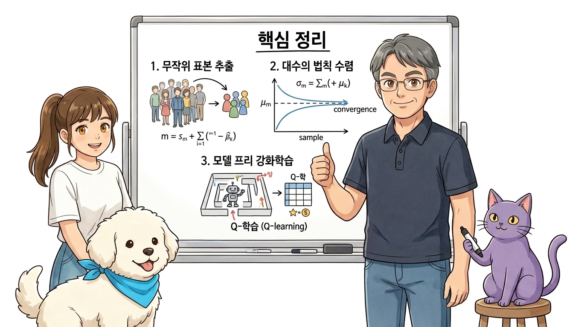
그림 09-0-5 몬테카를로법의 3대 핵심 기둥(무작위 표본 추출, 대수의 법칙 수렴, 모델 프리 학습)을 총정리하는 이호진 교수님과 연구실 4인방 (16:9 와이드)오늘 학습한 몬테카를로법의 본질은 다음 3가지 핵심 기둥으로 요약할 수 있습니다:
- 무작위 표본 추출 (Random Sampling):
- 복잡한 확률 분포나 해석적 적분이 불가능한 문제에 직면했을 때, 직접 무작위 표본을 대량으로 수집하여 문제를 극적으로 단순화합니다.
- 대수의 법칙 기반 수렴성 (Law of Large Numbers):
- 시행 횟수 n이 증가함에 따라 표본 평균 (1/n) ∑i=1n X(i)은 오차를 줄여가며 이론적 참 기댓값 E[X]로 정밀하게 수렴합니다.
- 모델 프리 강화학습의 수학적 초석 (Model-free RL):
-
환경의 전이 확률 P(s’ s,a)를 알지 못하는 블랙박스 환경에서도, 에이전트가 에피소드를 끝까지 완주하며 얻은 경험 데이터들의 산술 평균만으로 상태 가치 함수 v(s)와 행동 가치 함수 q(s,a)를 완벽하게 학습할 수 있습니다.
-
👨🏫 이호진 교수님의 직강 노트: “몬테카를로법의 진정한 위력은 ‘모든 공식을 완벽히 알아야만 문제를 풀 수 있다’는 고정관념을 깨부순 데 있습니다. 환경의 법칙을 몰라도 직접 경험해 보고 평균을 내면 진리에 도달할 수 있다는 이 담대한 발상이, 바로 현대 모델-프리 강화학습의 위대한 첫걸음이 되었습니다.”
🐱 조교 지니의 핵심 요약 노트: “몬테카를로법의 본질은 ‘복잡한 수학 공식을 모를 때, 무작위 표본(샘플)을 많이 뽑아서 평균을 내면 우주의 참 진리에 도달한다’는 것이란다냥!
다음 절부터는 도로시가 강화학습의 에피소드 미로를 끝까지 모험하고 얻은 보상들을 역방향으로 차곡차곡 정산하여, 에이전트의 가치 함수를 어떻게 완벽하게 업데이트하는지 함께 배워보자냥!”